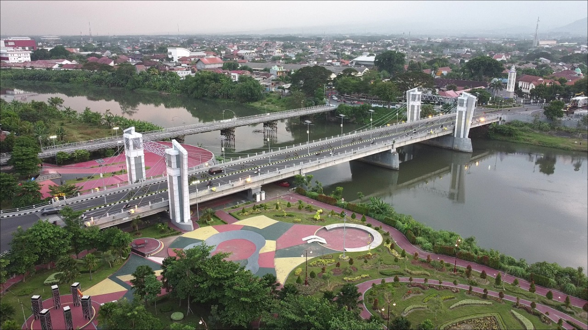
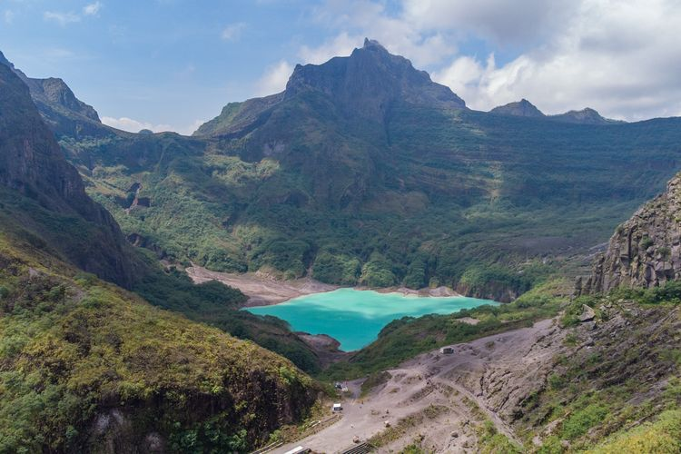

Kerajaan Kediri adalah kerajaan dari masa Hindu-Buddha yang
terkadang disebut juga sebagai Kerajaan Panjalu atau Kerajaan Daha.
Berdiri sejak tahun 1045 hingga 1222, pusat pemerintahan kerajaan
ini berada di Kediri, Jawa Timur. Masa kejayaan Kediri berlangsung
pada periode pemerintahan Raja Jayabaya, yang berkuasa antara tahun
1135 hingga 1159. Salah satu aspek yang terkenal dari Kerajaan
Kediri adalah karya sastra yang dihasilkan, terutama dalam bentuk
kakawin, yang sangat penting dan bermutu tinggi. Bahkan masa
pemerintahan Kerajaan Kediri disebut sebagai zaman keemasan Jawa
kuno. Berikut ini sejarah Kerajaan Kediri dari berdiri hingga runtuh
pada tahun 1222 akibat serangan Ken Arok.

Kabupaten Kediri berbatasan dengan Kabupaten Jombang di Utara,
Kabupaten Malang dan Kabupaten Blitar di Timur, Kabupaten Blitar dan
Kabupaten Tulungagung di Selatan, serta Kabupaten Nganjuk di Barat
dan Utara. Kota Kediri menjadi enklave dari Kabupaten Kediri.
Kabupaten Kediri memiliki luas wilayah 1.523,97 km² yang terbagi
menjadi 26 kecamatan. Pada tahun 2021, penduduk kabupaten ini
berjumlah 1.673.157 jiwa dengan kepadatan 1.097 jiwa/km2.

Berwisata ke Kabupaten Kediri, Jawa Timur, rasanya belum lengkap
tanpa sekalian mengunjungi Gunung Kelud. Gunung berapi yang sempat
beberapa kali erupsi ini berada tidak jauh di sebelah barat Kota
Kediri. Adapun pintu masuk wisata Gunung Kelud yang bisa dilalui
kendaraan adalah di Kecamatan Ngancar.Melalui pintu masuk itu,
kendaraan mulai dari sepeda motor hingga mobil bisa menjangkau area
parkirnya.Dari pusat Kota Kediri, jarak menuju area parkir wisata
Gunung Kelud adalah sekitar 39 kilometer (km) dengan waktu tempuh
kurang-lebih 1,5 jam.